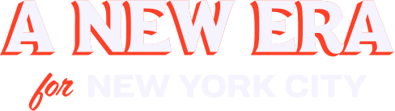

Ready to Serve
Contributing expertise and dedication to deliver on Mayor-elect Mamdani's vision for an affordable, equitable New York City
Get In Touch
Contributing expertise and dedication to deliver on Mayor-elect Mamdani's vision for an affordable, equitable New York City
Get In TouchI am a results-driven AI Specialist and Data Scientist with 9 years of total experience, including 4 years dedicated to data science, machine learning, and statistical modeling. My experience spans data-driven decision making, and implementation—skills that directly align with the needs of Mayor-elect Mamdani's transition team.
Additionally, I am an award-winning Blockchain developer, recognized at MIT Blockchain and Las Vegas Bitcoin Hackathons for Bitcoin-based payment systems. I combine this technical depth with a commitment to public financial literacy as the host of Bitcoinomics, where I demystify global economic trends for a broad audience. I recently proposed a Municipal Bitcoin Strategic Reserve to the Newport News, Virginia City Council, advocating for modern fiscal strategies at the local level.
I believe in the power of people-centered governance, have a strong commitment to progressive values, and am ready to contribute to building an administration that delivers real affordability and equity for all New Yorkers.
Adept at aligning data initiatives with organizational goals to drive impactful outcomes. Experienced in identifying key performance indicators (KPIs) and developing strategies to achieve them.
Proficient in leveraging data to inform strategy, track outcomes, and ensure accountability and resolve intricate business challenges across diverse sectors, including technology, insurance, renewables, and transportation.
Experience translating complex technical solutions to non-technical audiences. Proficient in leading and managing cross-functional teams towards common goals.
Bitcoinomics Podcast
Blockchain Engineering Projects
DigiLabsAI Freelance
The General Car Insurance
Mayor-elect Mamdani's campaign demonstrated the power of organizing and the hunger for real change in New York City. The mandate is clear: deliver on affordability, transform our approach to housing, and build a city government that truly works for working people.
I want to be part of the transition team because this is an opportunity to fundamentally reshape how New York City governs. My skills in technology and strategic focus can directly contribute to setting up an administration positioned to deliver transformative change from day one.
I'm ready to work, think creatively, and collaborate with others who share a commitment to building a more just and equitable city.
I would welcome the opportunity to discuss how my experience and skills can contribute to the transition team's success.
Send Message